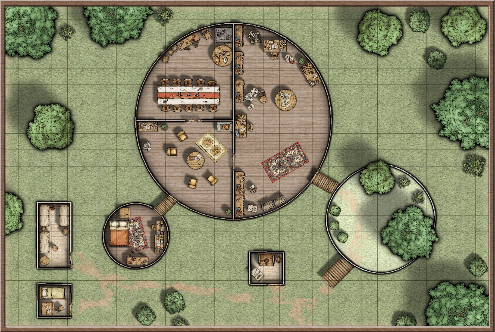

Conversiemelding
The Wild Sheep Chase is een D&D 5e one-shot voor niveau 4/5 © 2016 Richard Jansen-Parkes, oorspronkelijk gepubliceerd op de DMs Guild onder de Community Content Agreement. Deze pagina is een fanconversie die de statblokken, checks en beloningen aanpast aan de Wonden/Verdediging-gevechtsrekenkunde van You-Meet-In-A-Tavern (YMIAT) en de Classless-XP-economie. Het is geen officieel YMIAT-materiaal en is niet gelieerd aan, gesponsord door of goedgekeurd door de oorspronkelijke auteur, Wizards of the Coast of de DMs Guild.
De poging van de groep om een zeldzaam middagje downtime te pakken wordt verstoord door een paniekerig schaap met een scroll in de bek en een felle drang om hun aandacht te trekken. Dit is geen gewoon beest, maar een wizard die het slachtoffer werd van een verbitterde leerling met een Wand of True Polymorph.
Getransmuteerde wachters willen graag een schapendiner, terwijl het enige wat zijn opponeerbare duimen kan teruggeven in handen van zijn voormalige leerling — en huidige aartsvijand — ligt. Gelukkig heeft de wollige wizard nieuwe bondgenoten gevonden op wie hij kan rekenen… toch? Kunnen de helden een eind maken aan Ahmed Noke’s transmutatie-tirannie en een onschuldige wizard in zijn ware vorm herstellen?
Dit avontuur gebruiken
De tekst hieronder is opgedeeld in scènes: elke scène dekt een locatie, ontmoeting of belangrijk plotpunt. Statblokken staan in kaders. Lees alles door vóór je het speelt — het einde hangt af van spelerkeuzes, en Noke’s tactiek gaat ervan uit dat je zijn ontsnappingsplan al kent.
Aanbevolen partijniveau: deze one-shot gaat uit van een bekwame, ongeveer mid-tier partij — in standaard YMIAT-termen personages rond niveau 4–5. Voor een Classless-partij bestaat geen directe niveau-equivalent, maar een volledig besteed start-XP-budget plus wat gespaarde XP uit eerder spel (een getraind Toughness-niveau of twee, een paar wapenbehendigheden, en elk één Core-vermogen) is een redelijke lat. Schaald Guz, de wachters en Noke omhoog of omlaag naar Game Master-oordeel als jouw tafel lichter of zwaarder speelt.
Avontuurshaken
Spelers in dit avontuur trekken is eenvoudig. Het enige wat je nodig hebt, is dat ze een paar dagen doorbrengen in een stad of dorp groot genoeg voor een wizard.
Wil je vooraf zaadjes planten, introduceer Noke dan via geruchten of losse praatjes met winkeliers en herbergiers, die hem met angst en ontzag bekijken.
Baaaa-d News
Het avontuur begint terwijl de groep een middag doorbrengt. Misschien drinken ze in een herberg, rusten ze uit in hun basis, of wandelen ze zorgeloos door de straat. Waar ze ook zijn, al snel wordt duidelijk dat er iets heel vreemds aan de hand is.
Er klinkt geratel van hoeven, verraste kreten en paniekerig blaten. Voor de groep kan reageren, komt er een schaap op hen afgestormd.
Het beest lijkt in elk opzicht een gewoon schaap — fluffige witte vacht, zwart gezicht, gekrulde horens — maar het draagt een sierlijke scroll in de bek.
Het schaap probeert dicht bij het meest magisch begaafde lid van de groep te komen en zwaait met de scroll, zodat duidelijk is dat die moet worden gepakt.
Een lakzegel beweert dat het een Scroll of Speak with Animals (Modified) is. Als een personage dat hardop zegt — bijvoorbeeld om het aan de rest uit te leggen — lijkt het schaap enthousiast te knikken en te blaten.
Gebruiken ze de scroll (hardop voorlezen is genoeg om de spreuk te activeren — zie Speak with Animals, 1e niveau), dan horen ze allemaal hoe het blaten van het schaap onmiddellijk overgaat in beschaafd Common met een elfenaccent, al klinkt er nog een vleugje blaat in mee.
Nadat duidelijk is dat de speler hem begrijpt, stelt het schaap zich voor als Finethir Shinebright, een wizard in grote nood. Als de spelers willen luisteren, legt hij uit dat hij hen als avonturiers herkent en dringend hun hulp nodig heeft. Concreet: hij wil een uiterst krachtig magisch artefact terug van een gevaarlijke, mogelijk krankzinnige wizard.
Hij probeert zijn verhaal te vertellen, maar kort nadat hij begint vult gehuil de lucht…
Shepherds, Crooks
Parafrase
Luid gehuil vult de lucht, begeleid door boze kreten en af en toe een schreeuw die dichterbij lijkt te komen.
De oorzaak wordt snel duidelijk wanneer een enorme half-orc naar jullie toe stapt, zich een weg door de menigte banend zonder zich om wie dan ook te bekommeren. Voor hem lopen drie grote wolven met ijzeren halsbanden, terwijl een logge gestalte in een vieze bruine mantel in zijn kielzog meekomt, met voetstappen luid genoeg om boven het kabaal uit te steken.
De half-orc zet zijn kleine oogjes op jullie en stapt naar voren, één hand rustend op de greep van een greatsword.
„Dat schaap is van meester Noke… hij wil het terug.”
De half-orc, Guz, wordt begeleid door een drietal met halsbanden omgedane Wolves met vreemd intelligente ogen; de enorme gestalte achter hem is eigenlijk een getransmuteerde Brown Bear. Hij eist dat hem „het schaap van meester Noke” wordt gegeven, dat naar verluidt is ontsnapt en van grote sentimentele waarde is. Elke vermelding van Shinebrights ware aard wordt met hol, vreugdeloos gelach beantwoord.
Guz is niet de slimste, maar wel zeer loyaal en vastberaden om zijn opdracht te voltooien. Zijn trackers weten dat Shinebright er is, hoe goed de groep hem ook verbergt, en nemen geen nee voor antwoord.
Hij prefereert geweld en intimidatie, maar is ook bereid om steekpenningen of beloftes van magische gunsten te doen als dat beter lijkt te werken. Voelt hij dat hij geen vooruitgang boekt, dan valt Guz zonder waarschuwing aan — de wolven volgen, terwijl de gemantelde gestalte de capuchon laat vallen en met een verschrikkelijke brul het gevecht in stormt.
De precieze details van een gevecht hangen af van de locatie. In een herberg liggen tafels en omgegooide stoelen op de vloer; op straat vormen angstige voorbijgangers zones van moeilijk terrein.
Alle beesten hebben een intelligente menselijke geest in zich en handelen slim. Guz stormt graag mee in de voorste linie naast de Brown Bear. Intussen proberen twee Wolves achter de groep langs te snijden, en de derde — belast met het daadwerkelijk grijpen van Shinebright — vecht als de stevigere, slimmere Pony hieronder.
Ze willen Shinebright gevangen nemen, niet doden. Als Guz hem pakt, vertrekken hij en zijn bondgenoten naar Noke’s huis. De groep moet dan beslissen of ze volgen — mogelijk met een achtervolgingsscène.
Guz
Medium humanoid (half-orc), chaotic neutral
Verdediging 14 (leren pantser) Max. wonden 7 Snelheid 30 ft.
Fitness +3 Insight +0 Willpower +1
Vaardigheden Intimidation +2 Perception 10 Talen Common, Orc
Reckless. Guz kan ervoor kiezen om voordeel te krijgen op alle nabije wapenaanvallen tijdens zijn beurt, maar in ruil hebben alle aanvalsworpen tegen hem ook voordeel tot het begin van zijn volgende beurt.
Acties
Whirling Greatsword. Aanval met wapen (nabij): 16 om te redden, reikwijdte 5 ft., twee aparte doelwitten. Treffer: 2 treffers snijdende schade.
Wolf (×2)
Medium beast
Verdediging 13 (natuurlijk pantser) Max. wonden 2 Snelheid 40 ft.
Fitness +2 Insight +1 Willpower −2
Perception 11 Stealth 14
Heightened Hearing and Smell. De Perception van de wolf is 16 bij waarnemen via gehoor of reuk.
Pack Tactics. De wolf heeft voordeel op aanvalsworpen tegen een wezen als minstens één bondgenoot van de wolf binnen 5 ft. van dat wezen staat en die bondgenoot niet incapacitated is.
Acties
Bite. Aanval met wapen (nabij): 15 om te redden, reikwijdte 5 ft., één doelwit. Treffer: 1 treffer stekende schade. Als het doelwit een wezen is, moet het slagen voor een DC 12 Fitness-save of prone raken.
Wolf, Grabber (Pony statistics)
Medium beast
Verdediging 10 Max. wonden 1 Snelheid 40 ft.
Fitness +2 Insight +4 Willpower −2
Perception 10 Stealth 10
Gebruikt het Pony-statblok — een steviger lichaam om een spartelend schaap te slepen — maar met Insight +4 in plaats van de gebruikelijke −2, als weergave van de intelligente wachter die erin zit.
Draft Animal. De pony kan een gewicht in pounds duwen, trekken of tillen gelijk aan driemaal zijn draagcapaciteit.
Acties
Hooves. Aanval met wapen (nabij): 15 om te redden, reikwijdte 5 ft., één doelwit. Treffer: 1 treffer verpletterende schade.
De getransmuteerde Brown Bear gebruikt het eigen statblok hieronder (zie The House in the Woods). In elk „dier” zit een intelligente menselijke geest die de beslissingen neemt, dus laat ze tactisch handelen in plaats van op beestinstinct — flankeren, een neergehaald doelwit afmaken, terugtrekken om Guz te beschermen.
Roleplaying Shinebright
Arrogant, zelfingenomen en vol van zijn eigen ego is Finethir Shinebright een van de slechtst passende personen om in een schaap te worden veranderd. Toch straalt de voormalige elvenwizard, in welke vorm dan ook, een zeurderige, boekengeleerde intellectualiteit uit.
Ondanks zijn gebreken is hij over het algemeen goedhartig. Als hij het merkt en het hem niet te veel last bezorgt, helpt hij anderen waar mogelijk — al klaagt hij luid over hun onvermogen om iets zo eenvoudigs als poly-planaire transweave-theorie te begrijpen.
Ooit spraken lokale edelen, kooplieden en arcanisten de naam Finethir Shinebright met respect, ontzag en tegenzin. Als meester van transmutatie werd hij regelmatig voor grote klussen gevraagd, zoals geblokkeerde wegen vrijmaken door enorme keien in konijnen te veranderen. Twee jaar als schaap hebben hem weinig nederigheid geleerd, maar wel veel over gras. Keert hij terug in zijn natuurlijke vorm, dan is Shinebright een wilgentakke dunne high elf met stroblond haar en een zeer lange neus.
After the Dust Settles
Zodra Noke’s handlangers zijn verslagen, afgeleid of anderszins afgehandeld, smeekt Shinebright de groep. Zonder hun hulp is hij verloren — Noke heeft nog veel wachters in dienst, en uiteindelijk vinden ze hem.
Als ze huurlingachtig zijn, herinnert hij hen eraan dat hij in zijn ware vorm een machtige en rijke wizard is, en belooft grote beloningen — deals die hij meer dan bereid is aan te gaan, ook al weet hij dat hij ze niet echt kan nakomen.
In elk geval legt Shinebright uit:
- Tot twee jaar geleden bezat en werkte hij vanuit een toren aan de rand van de stad, gespecialiseerd in transmutatiemagie. Zijn meest gekoesterde bezit — en waarschijnlijk de sleutel tot zijn succes — was een uiterst zeldzame Wand of True Polymorph.
- Op een noodlottige nacht ontwaakte hij uit zijn meditatieve trance en zag zijn leerling, Ahmed Noke, boven hem staan met de wand in de hand. Shinebright eiste te weten wat de jongen deed, maar het enige geluid dat hij kon maken was een boos „baaaah.”
- De wizard werd een virtuele gevangene in zijn eigen tuin. Hij moest grazen op niets dan gras en boterbloemen, terwijl hongerige wolven en andere beesten — eigenlijk getransmuteerde wachters — toekeken.
- Gisteravond voelde hij voor het eerst in maanden hoop, toen Noke zijn huis verliet zonder de deur te sluiten. Shinebright sloop naar binnen, zocht een oude boekenkast op en stal de Scroll of Speak with Animals. Daarna rende hij de stad in met de scroll tussen de tanden, wanhopig op zoek naar iemand die kon helpen — en vond de groep.
Roleplaying Guz
Een logge half-orc-bruut die geweld en intimidatie als de enige zinnige methoden ziet om doelen te bereiken. Hij gaat er ook van uit dat de meeste mensen zo denken, en geeft daarom graag zelf eerst een klap.
Hoewel buitenstaanders hem vaak als kwaadaardig zien, is hij ongelooflijk loyaal aan Noke — die oprecht niet geïnteresseerd is in hoe een wezen er van buiten uitziet — en is hem onvoorwaardelijk toegewijd.
Guz is niet bijzonder intelligent en raakt snel in de war door snelpratende tegenstanders, al maakt dat hem meestal alleen maar bozer. Hij probeert ook graag lange, ingewikkelde woorden te gebruiken die hij van Noke heeft opgepikt — of hij precies begrijpt wat ze betekenen, is waarschijnlijk twijfelachtig.
- Om terug te keren in zijn oorspronkelijke vorm heeft Shinebright opnieuw een dosis True Polymorph nodig. Dus toegang tot zijn oude wand.
- Zijn voormalige leerling woont nog steeds in Shinebrights oude huis, net ten zuidoosten van de stad. Hij heeft de wand altijd bij zich en vertrekt alleen als het absoluut moet.
- Shinebright kent de indeling van zijn oude huis tot in detail en beschrijft die graag eindeloos.
The House in the Woods
Het pad naar Noke’s toren takt een paar mijl buiten de stad af van de hoofdweg, tussen een opening in de struiken. Het is een veel belopen route die al snel tussen hoge eiken slingert.
Wie het pad op sporen bekijkt, ziet makkelijk afdrukken van vele voeten en poten; de meest verse lijken bij de groep van Guz te horen.
Het pad loopt misschien een mijl door spaarzaam bos zonder teken van bewoning. Tenzij ze weten waar ze op moeten letten, kan de groep verrast zijn door het zicht dat hen wacht wanneer Shinebrights oude huis tussen de boomtoppen verschijnt.
Parafrase
In plaats van steen of glas lijkt het huis voor jullie gevormd uit de levende takken van vier stevige eiken. Die zijn gevormd en geweven tot drie dikke platforms.
Het laagste platform is ongeveer 40 ft. breed en ligt zo’n 10 ft. boven de grond. De enige duidelijke weg omhoog is een zachte helling van wortels en takken die ongeveer aansluit op het hoofdpad. Takken kronkelen om de basis en vormen een ruwe kom eromheen. Vanaf hier zie je bloemen en kleine bomen langs de rand groeien.
Verreweg het grootste van de drie is het middelste platform, zo’n 60 ft. breed. Het ligt ongeveer 20 ft. boven de grond en is volledig omsloten door een muur van kronkelende takken. Je ziet regelmatig geplaatste, raamgrote openingen, en wat een deur lijkt op het punt dichtst bij het tuinplatform.
Het hoogste platform ligt ongeveer 30 ft. boven de grond en is veel kleiner dan de andere. Het lijkt via een kleine helling met het centrale platform verbonden.
Onder de platforms liggen twee kleine houten hutten en een groot buitenhuisje verspreid.

Wanneer de groep bij het complex aankomt, zijn er drie Apes die slapen of met een oversized dobbelsteenpaar spelen, met ijzeren greatswords in de grond naast hen. Een Brown Bear zit in het buitenhuisje, bezig met zijn zaken.
De deur naar het centrale platform is bijna altijd op slot: DC 14 Fitness (Athletics) om in te trappen, of DC 12 Fitness (Thieves’ Tools) om te openen. Binnen is het gebied in drie delen verdeeld: een combinatie van bibliotheek en lab, een zitkamer, en een eetkamer/keuken. Rommelige boekenkasten staan langs veel van de buitenmuren, en werktafels liggen bezaaid met stapels inktspatten notities en ingewikkelde anatomische diagrammen van diverse beesten en monsters.
Het hoogste platform dient als slaapkamer voor Noke en bevat weinig meer dan een garderobe, een groot houten bed en een rommelige toilettafel. De hutten hebben elk één of twee bedden, waarvan een paar oversized, plus de algemene rommel van de gewone mannen die er slapen.
Roleplaying Noke
Noke aanbad Shinebright ooit en diende jarenlang als zijn leerling. Maar naarmate de tijd voortsleepte, veranderde hun relatie nooit.
Decennia gingen voorbij en nog steeds behandelde de meester-transmuter hem als een kind: koken, poetsen, antwoorden uit het hoofd opzeggen. Wanneer Noke erop aandrong, legde Shinebright uit dat hij zelf zo was opgeleid, en leek hij niet te begrijpen dat Noke als mens geen eeuw kon missen voor een leerlingschap.
Tegelijk begon Noke te beseffen dat veel van Shinebrights faam niet uit diens eigen — overigens uitgebreide — vermogens kwam, maar uit de Wand of True Polymorph die hij hanteerde.
Uiteindelijk knapte hij, keerde zich tegen zijn voormalige meester en vestigde zichzelf als meester-wizard. Schuldgevoel en plots losgelaten ambitie deden zijn geest echter geen goed. Hij is paranoïde dat iemand hem zal aanvallen zoals hij Shinebright aanviel, en slaapt zelden. Die paranoia bracht hem ertoe een troep wachters in te huren, van wie hij er veel in sterkere, beestachtigere vormen heeft getransmuteerd.
Ape (×3)
Medium beast
Verdediging 12 Max. wonden 3 Snelheid 30 ft., climb 30 ft.
Fitness +5 Insight +1 Willpower −2
Perception 13 Stealth 12
Acties
Multiattack. De aap doet twee Fist-aanvallen. Als beide één Medium of kleiner wezen raken, is het doelwit grappled (ontsnappen DC 13), en kan de aap geen ander wezen grappleen.
Fist. Aanval met wapen (nabij): 16 om te redden, reikwijdte 5 ft., één doelwit. Treffer: 1 treffer verpletterende schade.
Rock. Aanval met wapen (afstand): 16 om te redden, bereik 25/50 ft., één doelwit. Treffer: 1 treffer verpletterende schade.
Elke aap draagt een oversized ijzeren greatsword: herformuleer de Fist-aanval desgewenst als een Slash voor 2 treffers snijdende schade, als je de wapens mechanisch wilt laten meespelen.
Bear, Brown
Medium beast
Verdediging 11 (natuurlijk pantser) Max. wonden 5 Snelheid 40 ft., climb 30 ft.
Fitness +4 Insight +1 Willpower −2
Perception 13 Stealth 10
Heightened Smell. De Perception van de beer is 18 bij waarnemen via reuk.
Acties
Multiattack. De beer doet één Bite-aanval en één Claws-aanval. Als beide één wezen raken, is het doelwit grappled (ontsnappen DC 14). De beer kan tegelijk maar één wezen grappleen.
Bite. Aanval met wapen (nabij): 17 om te redden, reikwijdte 5 ft., één wezen. Treffer: 1 treffer stekende schade.
Claws. Aanval met wapen (nabij): 17 om te redden, reikwijdte 5 ft., één doelwit. Treffer: 1 treffer snijdende schade.
Wordt de groep niet meteen gezien, dan kunnen ze op verschillende manieren naderen — de hellingen beklimmen, langs een slapende aap sluipen, of de beer één voor één uit het buitenhuisje lokken. Alle beesten hebben nog een intelligente menselijke geest en handelen slim — ze roepen om hulp, trekken terug naar Noke, en proberen hem tijd te kopen in plaats van ter plaatse te sterven.
Confronting Noke
Noke is van nature paranoïde, en Shinebrights recente ontsnapping heeft zijn kijk op de wereld niet bepaald verbeterd. Hem van de veiligheid van zijn toren weglokken is daardoor bijzonder moeilijk — maar niet onmogelijk. Zijn honger naar faam en macht weegt (voorlopig) iets zwaarder dan zijn angst om te worden onttroond. Een zeer bedreven stel leugenaars met een genoeg doortrapt plan en een dosis geluk kan hem misschien verleiden met een bijzonder prestigieus, lucratief contract.
Noke werkt koortsachtig aan nieuwe spreuken op het centrale platform. Merkt hij de groep naderen, dan beveelt hij hen „het schaap terug te geven — in ruil vernietig ik jullie niet allemaal.” Praten ze, dan onthult hij zijn redenen om Shinebright te haten en pocht onsamenhangend over zijn eigen prestaties. Hij vraagt ook of ze „mijn man, Guz” hebben gedood, en is zichtbaar aangeslagen als hij hoort dat die dood is. Weigeren ze Shinebright terug te geven, dan beveelt hij zijn mannen aan te vallen.
Het belangrijkste in elk gevecht dat uitbreekt is Noke: offensief zwak, maar hij kan zijn bondgenoten dramatisch buffen. Zodra de Brown Bear uit het buitenhuisje komt, cast hij Haste erop (3e niveau, 3 Spell Power: verdubbelt Speed, +2 Verdediging, voordeel op Fitness-saves, en een extra Attack/Dash/Disengage/Hide/Utilize per beurt — hier in plaats van de oorspronkelijke Enlarge/Reduce, herformuleerd als brute transmutatie). Hij ondersteunt de aanvallen van zijn minions met Ray of Frost (cantrip, geen Spell Power-kosten: spreukaanval op afstand, 1 Cold-wond en −10 ft. Speed tot het begin van zijn volgende beurt bij een treffer), en houdt vooral Concentratie op Haste vast.
De Apes vechten tot de dood en vluchten zodra ze onder de helft van hun gezondheid zakken. Zodra duidelijk is dat het gevecht verloren is, of een speler gewoon te dichtbij komt, cast Noke Expeditious Retreat (1e niveau, 1 Spell Power: laat hem meteen Dashen, daarna elke beurt Dashen bovenop zijn normale actie zolang het duurt) en vlucht het centrale platform in, de deur achter zich op slot. Hij beweegt zo snel mogelijk naar zijn slaapkamer en cast True Polymorph op het grootste ding dat hij vindt — zijn bed.
Ahmed Noke
Medium humanoid (human), neutral evil
Verdediging 12 Max. wonden 6 Snelheid 30 ft.
Fitness +2 Insight +3 Willpower +0
Perception 11 Talen Common, Elven, Draconic
Spellcasting. Noke’s spellcasting-eigenschap is Insight (spell save DC 14). Hij heeft de volgende spreuken prepared: Ray of Frost (cantrip), Expeditious Retreat (1e niveau), Haste (3e niveau). Hij heeft ook één lading van de Modified Wand of True Polymorph — zie hieronder.
Acties
Dagger. Nabije of Aanval met wapen (afstand): 16 om te redden, reikwijdte 5 ft. of bereik 20/60 ft., één doelwit. Treffer: 1 treffer stekende schade.
Drie rondes nadat hij wegrent, barst hij uit het dak van zijn slaapkamer rijdend op de Bed Dragon Wyrmling — een beest dat eruitziet als een uit hout gesneden draak, met wapperende beddengoedvleugels en een staart die eindigt in een zacht kussen. Zijn de spelers in de hoofdwoonruimte, dan stort hij door het plafond en valt aan.
De Wyrmling is niet zo slim en gebruikt Splinter Breath zo vaak mogelijk; als die niet beschikbaar is, valt hij gewoon het dichtstbijzijnde doelwit aan. Hij geeft wel prioriteit aan vijanden die vuur tegen hem gebruiken. Terwijl hij op de Wyrmling rijdt, gebruikt Noke Ray of Frost om partijleden die willen terugtrekken te vertragen.
Gaat de Wyrmling verloren — door schade of omdat Noke Concentratie verliest — dan verandert hij terug in een grondig toegetakeld oud bed.
Wanhopig en onwillig om zijn oude meester te laten winnen, probeert een babbelende Noke daarna de wand op zichzelf te gebruiken, van plan om zich tot een monsterlijk wezen te transmuteren. De overgebruikte wand knettert, sist en faalt met een knal, en verandert Noke in een Gibbering Mouther — een misvormde hoop vlees, organen en gezichtskenmerken. Het treurige wezen valt gedachteloos aan, babbelend uit tientallen monden, tot het volledig vernietigd is.
Bed Dragon Wyrmling
Large construct-like beast (reflavored dragon), chaotic neutral
Verdediging 16 (natuurlijk pantser) Max. wonden 8 Snelheid 30 ft., climb 30 ft., fly 30 ft.
Fitness +4 Insight −1 Willpower −3
Perception 12 Stealth 15
Kwetsbaarheid fire (het is vooral aanmaakhout en linnen)
Acties
Bite. Aanval met wapen (nabij): 17 om te redden, reikwijdte 5 ft., één doelwit. Treffer: 2 treffers stekende schade.
Splinter Breath (Recharge 5–6). De Bed Dragon Wyrmling stuurt een wolk houtsplinters uit in een kegel van 15 voet. Elk wezen in dat gebied moet een DC 13 Fitness-save maken; bij een mislukte save 7 treffers stekende schade, of de helft zoveel (naar beneden afgerond) bij succes.
Gibbering Mouther
Medium aberration, unaligned
Verdediging 9 Max. wonden 8 Snelheid 10 ft., swim 10 ft.
Fitness +3 Insight +0 Willpower −2
Perception 10 Immuun prone Zintuigen darkvision 60 ft.
Aberrant Ground. De grond binnen 10 ft. van de mouther is deegachtig moeilijk terrein. Een wezen dat zijn beurt daar begint moet slagen voor een DC 13 Fitness-save of heeft tot het begin van zijn volgende beurt gehalveerde snelheid.
Aberrant Resilience. De mouther is resistant tegen de conditions charmed, frightened, paralyzed en stunned, en heeft voordeel op saves tegen spreuken of effecten die zijn vorm zouden veranderen.
Gibbering. De mouther babbelt incoherent zolang hij een wezen kan zien en niet incapacitated is. Een wezen dat zijn beurt binnen 20 ft. begint en het gebabbel kan horen moet slagen voor een DC 13 Willpower-save of verliest reacties tot het begin van zijn volgende beurt en gooit een d8: 1–4 doet het niets; 5–6 beweegt het zijn volledige snelheid in een willekeurige richting; 7–8 doet het een nabije aanval tegen een willekeurig wezen binnen bereik.
Acties
Multiattack. De gibbering mouther doet twee Bite-aanvallen. Als beide één Medium of kleiner wezen raken, moet het doelwit slagen voor een DC 13 Fitness-save of prone raken.
Bite. Aanval met wapen (nabij): 15 om te redden, reikwijdte 5 ft., één wezen. Treffer: 1 treffer stekende schade.
Rend Mind. Eén wezen dat de mouther binnen 30 ft. kan zien moet slagen voor een DC 13 Willpower-save of krijgt 5 treffers psychische schade en lijdt 1 minuut onder een willekeurig, kortstondig dread-effect.
Bonusacties
Blinding Spittle. De mouther spuugt een onwereldlijke drab naar tot twee wezens binnen 30 ft. Elk moet slagen voor een DC 13 Fitness-save of is blinded tot het einde van zijn volgende beurt.
Zelfs dan neemt Noke bij vertrek al zijn overgebleven lijfwachten mee en verdenkt hij de groep razendsnel van verraad bij het geringste teken daarvan. Hij heeft zijn wand altijd bij de hand; krijgt hij genoeg tijd om te casten, dan gebruikt hij een lading True Polymorph om een nabij voorwerp tot een Wyrmling te transmuteren — ongeveer dezelfde stats als de Bed Dragon Wyrmling hierboven — afhankelijk van het materiaal kan de sfeer anders zijn en moeten weerstanden/kwetsbaarheden licht worden aangepast.
The Modified Wand of True Polymorph
Gevormd uit een lange, dunne twijg van een eik, houdt deze wand 1d4−1 ladingen van True Polymorph (9e niveau), met een minimum van 1. Iedereen met een spellcasting-vermogen die er minstens één uur aan heeft geattuned, kan hem gebruiken. Ladingen resetten elke dageraad.
Om vaker te kunnen casten is de wand voorzien van een bollige, met runen gegraveerde ijzeren band en lopen er scheuren over de lengte.
Inspectie met een DC 15 Insight (Arcana)-check onthult dat de modificaties de wand uiterst onbetrouwbaar hebben gemaakt. Elke keer dat een lading wordt gebruikt, moet de gebruiker slagen voor een DC 17 Insight (Arcana)-check.
- Bij succes cast de spreuk normaal, en stijgt de DC om hem te gebruiken permanent met 1.
- Bij falen met vijf of minder transmuteert de spreuk het doelwit in plaats daarvan tot een Gibbering Mouther (statblok hierboven) — een afzichtelijke hoop ogenschijnlijk willekeurige ledematen, organen en gezichtskenmerken, die gedachteloos het dichtstbijzijnde doelwit aanvalt en in tientallen gebroken stemmen babbel. Deze transformatie kan niet ongedaan worden gemaakt door een spreuk lager dan 9e niveau en eindigt niet door Concentratie te stoppen. Het doelwit mag een saving throw tegen dit effect maken zoals bij een normale casting van True Polymorph.
- Bij falen met meer dan vijf explodeert de wand bovendien heftig: 1 treffer Force-schade aan alle wezens binnen 10 ft. voor elke resterende lading in de wand. Dit vernietigt de wand.
Big Choices
Als de spelers de wand terugvinden, is meteen duidelijk dat die beschadigd is. Iedereen met behendigheid in Arcana ziet dat hij is aangepast om vaker gebruikt te kunnen worden, maar overgebruik heeft hem uiterst onbetrouwbaar gemaakt.
Willen ze met Shinebright praten, dan levert een snelle zoektocht op het centrale platform nog een Scroll of Speak with Animals op. Bij het zien van het vernielde lijk van zijn voormalige leerling kan Shinebright zelfs beseffen hoe slecht hij Noke behandelde, en somber worden ondanks zijn triomf.
Zelfs als hij weet van de gevaren van zijn oude wand, is Shinebright bereid zijn leven te riskeren om weer elf te worden. Hij is echter ook te overtuigen als de groep hem ervan afprobeert te praten. Een overtuigend argument en een DC 15 Willpower (Persuasion)-check volstaan om de voormalige wizard te laten heroverwegen.
Voor hij het risico van de spreuk op zich neemt, vraagt Shinebright dat er bericht naar zijn oude college wordt gestuurd als hij sterft.
Als de groep de spreuk uitvoert en die slaagt, feliciteert Shinebright hen hartelijk. Hij moet worden herinnerd aan alles wat hij beloofde toen hij nog een schaap was, en kan geen financiële beloning betalen: Noke was vrijwel blut en had de meeste spullen verkocht voor onderzoeksmateriaal en wachters. Hij is wel bereid tot transmutaties tot 5e niveau voor hen, tegen net genoeg om de componenten te dekken. Hij neemt ook gevluchte getransmuteerde wachters op, met de belofte te werken aan hun terugkeer naar hun natuurlijke vorm.
Als de groep de spreuk uitvoert en die mislukt, sterft Shinebright permanent. De groep mag zijn laatste wens eren en de toren min of meer intact laten, of hem naar hartenlust plunderen. De toren is verrassend leeg aan nut voor niet-transmuters; waardevolle spullen beperken zich tot dure labapparatuur en arcane rommel — een zeldzame vondst ter waarde van ongeveer 1.000 GP, het soort big-ticket-schat waarvoor de zilverstandaard-economie van Classless goud reserveert, niet het alledaagse SP. Willen de spelers, dan kunnen ze het hele torencomplex als hun eigen claimen — al kan dat problemen geven wanneer lokale edelen Noke willen bezoeken en hem vermist vinden.
Als de groep weigert de spreuk uit te voeren, accepteert Shinebright dat, maar geeft zijn hoop niet helemaal op. Hij neemt zijn oude huis terug en werkt aan een manier om zijn vloek te verbreken. In elk geval gaat hij naar de slaapkamer en trekt een van zijn oude gewaden aan, die hij draagt tot hij weer in zijn natuurlijke vorm is. Hoewel hij boos op hen is, erkent Shinebright dat hij de groep een grote schuld verschuldigd is.
In elk geval ontvangen avonturiers die Shinebright helpen met Noke de Beloningen hieronder.
Not Like This…
Een sluipende groep kan de wand stelen terwijl Noke slaapt, of een combinatie van geluksworpen en creatieve tactiek kan een speler de wizard midden in het gevecht ontwapenen. Gebeurt dat, dwing het verhaal dan niet terug naar het „ideale pad”, maar laat het natuurlijk ontwikkelen.
Wat je wel moet doen: probeer minstens een hint te geven van de gevaren van de gemodificeerde wand vóór de spelers hem gebruiken. Misschien vonkt hij onnatuurlijk bij aanraking, of voelt Noke zich zelf verplicht hen te waarschuwen.
Beloningen
Ken XP toe via de tabel Classless Earning XP (0/1/2/3/5 voor Trivial/Easy/Moderate/Hard/Near Impossible), scène voor scène in plaats van één som aan het eind — de oorspronkelijke platte „500 XP” past niet bij de veel kleinere schaal van Classless. Een redelijke lezing van de moeilijkheid van dit avontuur:
| Scène | Voorgestelde moeilijkheid | XP |
|---|---|---|
| Guz en zijn wachters praten of bevechten | Hard | 3 |
| Wachters van het huis opruimen of erlangs sluipen | Hard | 3 |
| Confrontatie met Noke en de Bed Dragon Wyrmling | Near Impossible | 5 |
| Shinebrights lot oplossen (afgepraat, spreuk slaagt, of spreuk mislukt) | Moderate | 2 |
Dat is ongeveer 13 XP voor de hele one-shot als de groep elke scène doorkomt — genoeg om een Core-vermogen te trainen (15 XP) met een beetje over, of meerdere Minor-vermogens, wat ongeveer klopt voor de uitbetaling van één sessie op Classless-schaal. Pas vrij aan; het blijft Game Master-oordeel.
Credits en dankbetuigingen
The Wild Sheep Chase is © 2016 Richard Jansen-Parkes, oorspronkelijk gepubliceerd op de DMs Guild onder de Community Content Agreement. Deze pagina past tekst, ontmoetingen en statblokken aan aan YMIAT-regels — Wonden en Verdediging in plaats van hit points en Armor Class, Fitness/Insight/Willpower in plaats van de zes ability scores, en de Classless-XP-economie in plaats van een platte goud/XP-beloning. Alle conversiekeuzes en eventuele fouten zijn van deze fanadaptatie.
DUNGEONS & DRAGONS, D&D, Wizards of the Coast, Forgotten Realms, the dragon ampersand, and all other Wizards of the Coast product names, and their respective logos, are trademarks of Wizards of the Coast in the USA and other countries. This work contains material that is copyright Wizards of the Coast and/or other authors, used under the Community Content Agreement for Dungeon Masters Guild.